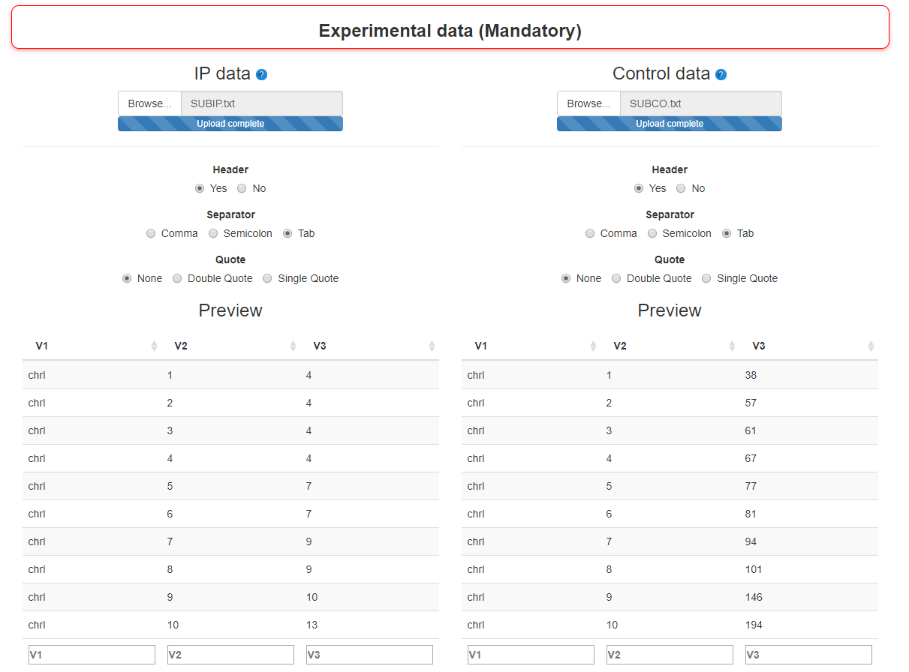
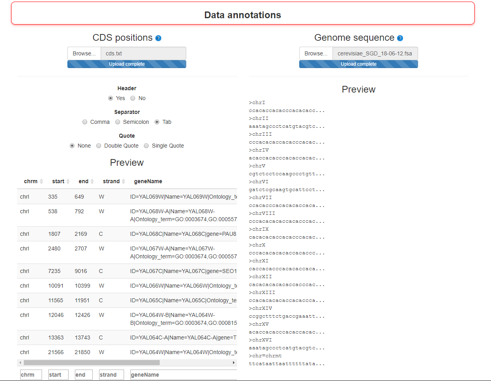
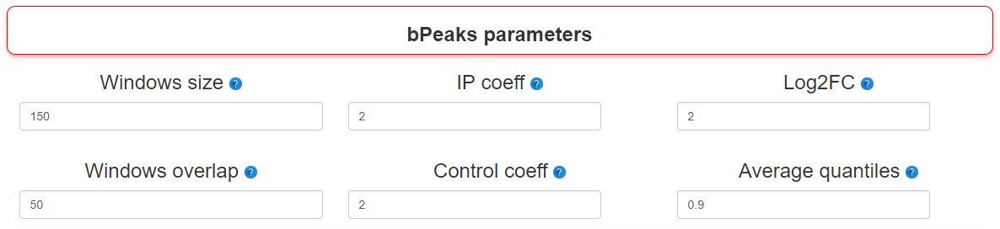
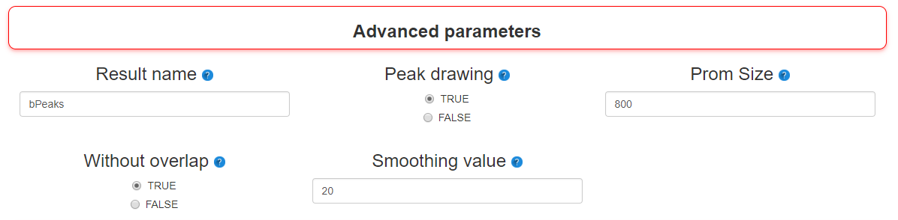
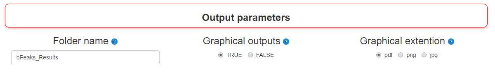
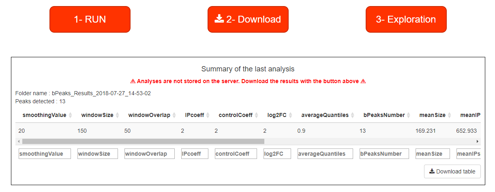

bPeaks is a simple approach to perform peak calling from ChIPseq data. Our general philosophy is to provide an easy-to-use tool, well-adapted for small eukaryotic genomes ( lower 20 Mb). bPeaks uses a combination of 4 cutoffs (T1, T2, T3 and T4)
to mimic "good peak" properties as described by biologists who visually inspect the ChIP-seq data on a genome browser. For yeast genomes, bPeaks calculates the proportion of peaks that fall in promoter sequences. These peaks are good candidates
as protein binding sites. Help is available throughout the analysis represented by blue question marks. Data is available on github (Data folder) to test the application. The launch of an analysis takes place in 5 steps in bPeaks analyzer :
A dataframe with sequencing results of the IP sample. This dataframe has three columns (chromosome, position, number of sequences) and should have been created with the dataReading function
- Control sample
A dataframe with sequencing results of the control sample. This dataframe has three columns (chromosome, position, number of sequences) and should have been created with the dataReading function
A simplified import system has been set up as well as a previewer to check the correct settings for reading imported files.

Screenshot of Import experimental data step
Step 2 : Import annotation data
To enrich the exploration in bPeaks explorer, two types of annotations can be imported:
- CDS positions
Not mandatory. A table (matrix) with positions of CDS (genes). Four columns are required (chromosome, starting position, ending position, strand (W or C), description). CDS positions for several yeast species are stored in bPeaks package (see
the dataset yeastCDS and also peakLocation function)
- Genome sequence
Not mandatory. To get the peaks sequences. Format : .fasta. This file must be the same as the one used when aligning the reads in the reference genome.

Screenshot of Import annotation data step
Step 3 : bPeaks parameters
Many parameters can be changed before starting an analysis. In this stage, the most important ones are present.
- Windows size
Size of the sliding windows to scan chromosomes
- Windows overlap
Size of the overlap between two successive windows
- IP coeff
Threshold T1. Value for the multiplicative parameter that will be combined with the value of the mean genome-wide read depth (see baseLineCalc). As an illustration, if the IPcoeff = 6, it means that to be selected, the IP signal should be GREATER
than 6 * (the mean genome-wide read depth). Note that a vector with different values can be specified, the bPeaks analysis will be therefore repeated using successively each value for peak detection. For a list of values, separate them by
; (i.e : 2;3 ).
- Control coeff
Threshold T2. Value for the multiplicative parameter that will be combined with the value of the mean genome-wide read depth (see baseLineCalc). As an illustration, if the controlCoeff = 2, it means that to be selected, the control signal should
be LOWER than 2 * (the mean genome-wide read depth). Note that a vector with different values can be specified, the bPeaks analysis will be therefore repeated using successively each value for peak detection. For a list of values, separate
them by ; (i.e : 2;3 ).
- Log2FC
Threshold T3. Threshold to consider log2(IP/control) values as sufficiently important to be interesting. Note that a vector with different values can be specified, the bPeaks analysis will be therefore repeated using successively each value
for peak detection. For a list of values, separate them by ; (i.e : 2;3 ).
- Average quantiles
Threshold T4. Threshold to consider (log2(IP) + log2(control)) / 2 as sufficiently important to be interesting. This parameter ensures that the analyzed genomic region has enough sequencing coverage to be reliable. These threshold should be
between [0, 1] and refers to the quantile value of the global distribution observed with the analyzed chromosome. For a list of values, separate them by ; (i.e : 2;3 ).

Screenshot of bPeaks parameters step
Step 4 : Advanced parameters
Additional parameters are also available to manage the results more finely:
- Result name
Name for output files created during bPeaks procedure
- Peak drawing
TRUE or FLASE. If TRUE, the function peakDrawing is called and PDF files with graphical representations of detected peaks are created.
- Prom Size
Size of the genomic regions to be considered as "upstream" to the annotated genomic features (see documentation of the function peakLocation for more information).
- Without overlap
If TRUE, this option allows to filter peak that are located in a promoter AND a CDS.
- Smoothing value
The number (n/2) of surrounding positions to use for mean calculation in the dataSmoothing function

Screenshot of Advanced parameters step
Step 5 : Output parameters
Last parameters used by bPeaks analyzer to organize results :
- Folder name
Folder name where results will be saved
- Graphical outputs
TRUE or FLASE. If TRUE, PBC, Lorenz curve and read repartition will be ploted.
- Graphical extention
Graphical extention of quality controls

Screenshot of output parameters step
Launching the analysis
Once all parameters have been saved, the analysis can be started. When the RUN button reappears, bPeaks application is ready for a new analysis. Once the analysis is complete, a summary of the results can be read in the table at the bottom of
the page. If the results suit you, you just have to download the result (be careful: the data are deleted between each analysis!) and use bPeaks exmplorer to explore the results.

Screenshot of Launching area and summary table of last analysis